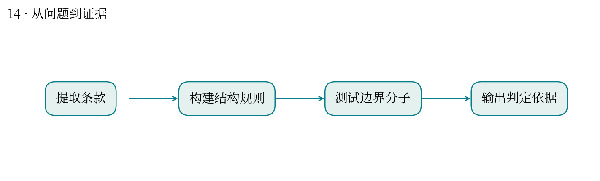
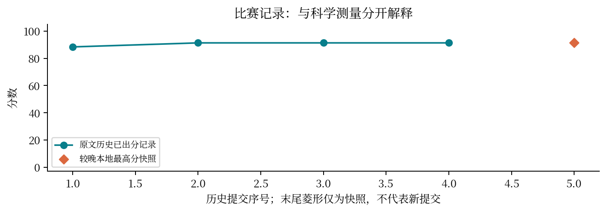

现实中想解决什么：大量候选分子出现时，如何先找出可能落入某份专利结构范围的分子？
从计算到应用：权利要求中的结构规则 → 分子匹配 → 供人工复核的候选清单。
这次实际做到哪一步：本题把文本结构范围转成可检查规则，提高批量初筛和边界解释效率。
还缺什么：这是结构分类辅助，不能据此认定侵权或自由实施；还涉及权利要求解释、有效性和法域。
把专利里的化学范围，变成可以执行的边界判断。
最高分快照：91.34 · 2026-10-12T01:11:24+08:00
Markush 通式用核心骨架、可变基团及例外描述一类分子。任务是给每个分子提供可追踪到文本的范围分类。
逐份提取 22 份专利的独立权利要求，转为 RDKit 子结构与变量规则，再测试边界分子和越界原因。
本地成绩快照为 91.34。分数只代表本次赛题分类表现；缺少逐样本隐藏标签，无法重画真实混淆矩阵。
骨架匹配只是第一步；连接位置、取代数、互斥条件和例外条款都可能改变标签。
像基因家族注释：保守结构域匹配不等于满足整个家族定义，还需检查组合、位置与排除条件。
报告讨论的是比赛中的计算分类，不推导真实专利法律结论；隐藏样本未公开限制了错误类型归因。


| attempt | 提交时间 | 分数 | 状态 |
|---|---|---|---|
| 51406 | 10-10 22:23:28 | 88.3824 | 已出分 |
| 53497 | 10-11 09:56:51 | 91.3368 | 已出分 |
| 53673 | 10-11 10:53:36 | 91.3368 | 已出分 |
| 55849 | 10-11 19:37:25 | 91.3368 | 已出分 |
源文件 SHA256 见 证据清单；用 scripts/build.py 重建图表。